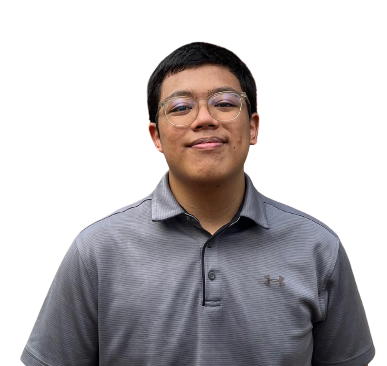

About
Information Systems student at Universitas Indonesia with hands-on experience in web development and UI/UX implementation. Familiar with HTML, CSS, Python, and Django, with experience developing responsive and interactive web interfaces through academic team projects. Detail-oriented, collaborative, and eager to translate design concepts into functional web experiences.
Projects & Experience
4Sehat5Kelebihan — Web Application
03/2026 – 04/2026
Academic Project
• Depok, Indonesia
- Developed a Django-based web application as a collaborative academic project.
- Implemented and styled responsive frontend interfaces using HTML and CSS, including navigation tabs, dropdown menus, and interactive UI components.
- Developed interactive frontend functionality using JavaScript (tab navigation, dynamic UI states, and theme customization).
- Implemented user authentication and conditional UI using Django templates and Google OAuth.
- Collaborated with team members using Git/GitHub throughout the development process.
Django
Python
HTML/CSS
JavaScript
Google OAuth
Academic Project
• Jakarta, Indonesia
- Collaborated with a team of five to design a comprehensive digital health application.
- Conducted user research through interviews, user personas, and Value Proposition Canvas.
- Designed user-friendly interfaces based on identified user needs and usability feedback.
- Designed high-fidelity UI/UX prototypes using Figma.
Figma
UI/UX Design
Prototyping
User Research
Education
Universitas Indonesia
2024 – PresentBachelor's degree in Information Systems
SMAN 36 Jakarta
2021 – 2024Natural Sciences
Tech Stack
Programming Languages:
Python
JavaScript
HTML & CSS
Toolbox & Frameworks:
Django
Figma
Git/GitHub
Google OAuth
Core Skills:
UI/UX Design
Prototyping
Public Speaking
Team Collaboration
Awards
1st Winner — YPM Fernando Sor Prize
2023Issued by The YPM Music School Student
4th Runner Up — FLS2N Solo Guitar
2023Suku Dinas Pendidikan Wilayah I
1st Winner — Musical Poetry
2022Suku Dinas Kebudayaan Jakarta Timur